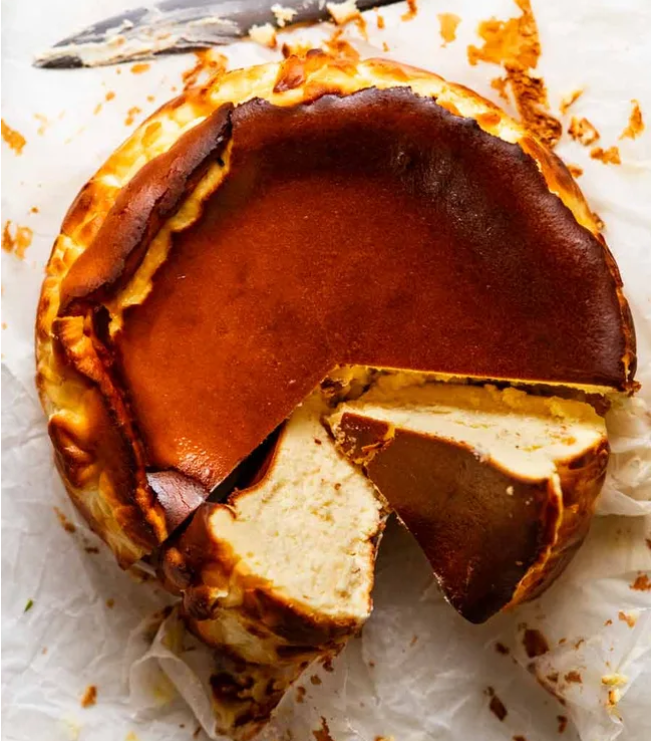

This recipe delivers the signature creamy interior and deeply caramelized, rustic top that makes the Basque Cheesecake so famous. It requires only a few simple ingredients and no water bath!
Ingredients (Approximate based on common recipes)
- 2 lbs (approx. 900g) Cream Cheese, room temperature
- 1 cup (200g) Granulated Sugar
- 5-7 Large Eggs, room temperature
- 1.5 cups (360ml) Heavy Cream
- 1 Tablespoon All-Purpose Flour
- Pinch of Salt
Key Tip: Ensure all dairy ingredients (cream cheese, eggs, cream) are at room temperature for the smoothest batter.
Instructions
- Preheat your oven to a very high temperature, typically 400°F to 430°F (200°C to 220°C).
- Line a 9-inch or 10-inch springform pan with parchment paper, allowing the paper to crinkle and extend well over the edges.
- In a large bowl (or stand mixer), beat the cream cheese and sugar until smooth. Scrape down the sides.
- Add the eggs one at a time, mixing well after each addition.
- Slowly mix in the heavy cream, flour, and salt until the batter is smooth and homogenous. Do not overmix.
- Pour the batter into the prepared pan.
- Bake for 40-50 minutes (time varies by oven). The top should be deeply caramelized (dark brown/burnt), and the center should still have a significant jiggle.
- Let the cheesecake cool completely on a wire rack at room temperature (it will sink significantly as it cools).
- Refrigerate for at least 4-8 hours (or overnight) before serving.
Serving Suggestion
Serve at room temperature for the creamiest texture.